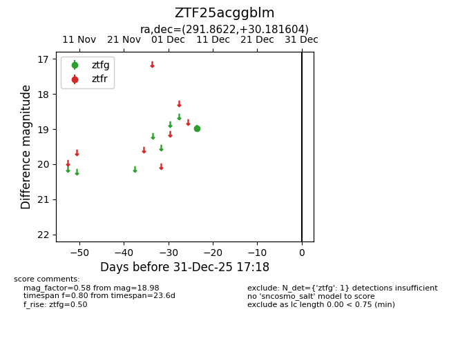
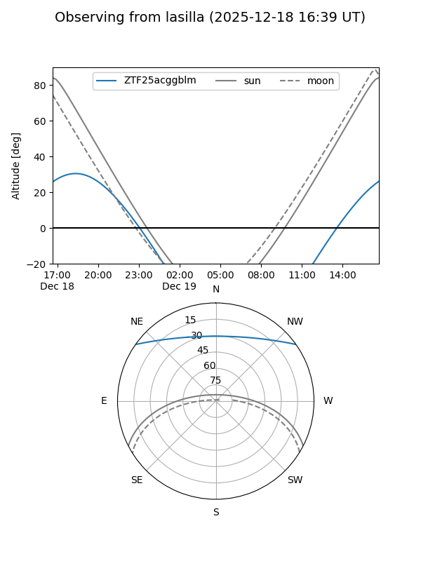
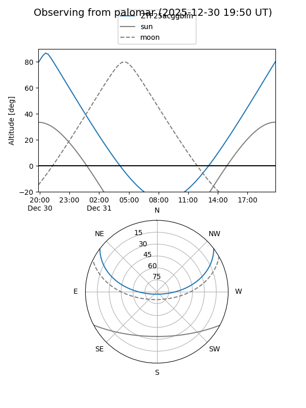

ZTF25acggblm
Target ZTF25acggblm at 2025-12-31 18:00
Aliases and brokers:
FINK: link
Lasair: link
ALeRCE: link
alt names
ZTF25acggblm (ztf,fink_ztf)
Coordinates:
equatorial (ra, dec) = 291.8622,+30.18160
equatorial (HMS+DMS) = 19:27:26.93,+30:10:53.77
galactic (l, b) = (63.7396,+6.24934)
Flags:
Photometry:
last ztfg=18.98
1 ztfg detections
Lightcurve

Visibility


Additional plots